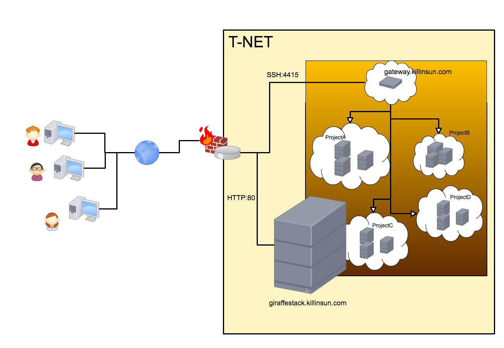
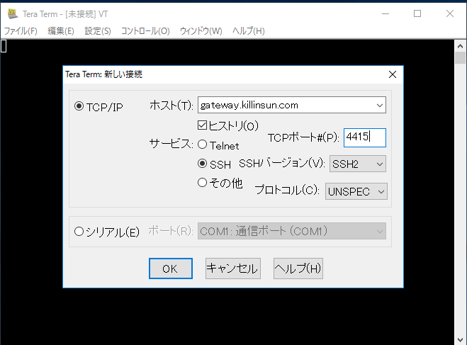
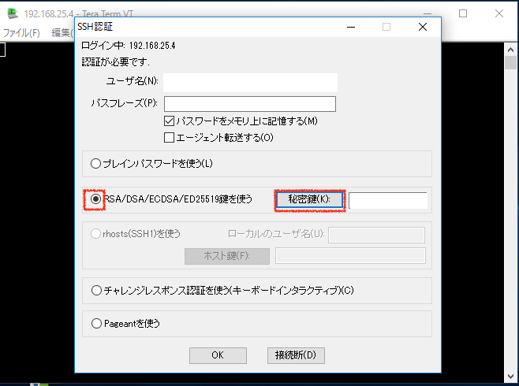
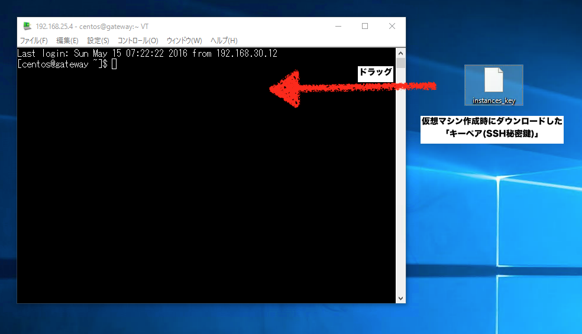
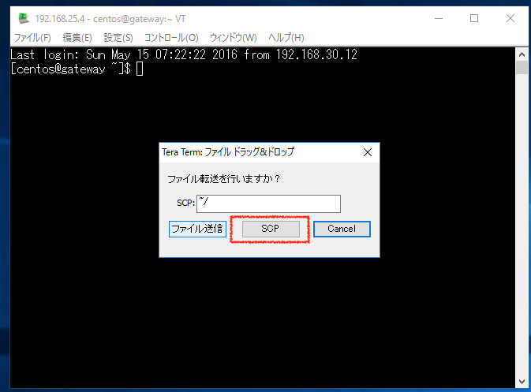
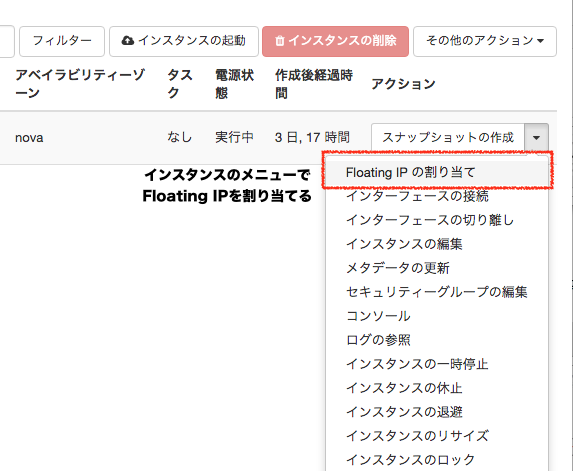

ゲートウェイサーバからの接続方法について¶
ゲートウェイサーバについて¶
ゲートウェイサーバとは、GiraffeStackネットワークに外部から接続する為の「踏み台サーバ」です。 GiraffeStackのWEBダッシュボードでは「コンソール画面」しか表示出来ませんが、ゲートウェイサーバ経由で 自分のマシンからSSH接続やSSHポートフォワーディングが可能となります。
{kind=link}
ゲートウェイサーバへのSSH接続手順¶
Windowsの場合(TeraTerm)¶
1.予めダッシュボードの「オブジェクトストア」からssh秘密鍵をダウンロードしておきます。 2.TeraTermを起動し、以下の通り指定し、OKを選択します。

- ホスト:gateway.killinsun.com
- サービス:SSH
- TCPポート:4415
3.SSH認証画面では以下の通り指定します。

- ユーザ名:GiraffeStackオーナより案内されたID
- パスフレーズ:空もしくはGraffeStackオーナより案内されたパスフレーズ
- 「RSA/DSA/ECDSA/ED25519鍵を使う」にチェックし、「秘密鍵」をクリックして１．でダウンロードした ゲートウェイ用の秘密鍵を選択します。
4.ゲートウェイサーバへ接続が出来ました。

UNIX/Linux系の場合¶
- 予めダッシュボードの「オブジェクトストア」からssh秘密鍵をダウンロードしておきます。
- 以下のsshコマンドで接続します。
$ssh -i [秘密鍵のパス] -p 4415 [ユーザID]@gateway.killinsun.com
ゲートウェイサーバから仮想マシンへのSSH接続手順¶
共通事項¶
仮想マシンを作成した際、「キーペア」の作成で準備した「仮想マシン用のSSH秘密鍵」が必要になります。
- TeraTermでゲートウェイサーバに接続する。
2.TeraTermのウィンドウに対し、予め用意した「仮想マシンのキーペア(SSH秘密鍵)」をドラッグする
{kind=link}
3.表示されるポップアップでは「SCP」を選択する
4.ゲートウェイサーバにキーペアが転送される。
$ls
注意事項¶
ゲートウェイサーバから仮想マシンへ接続する場合、そのままでは接続が出来ません。 以下の２種類の手法によって、仮想マシンへのアクセスが可能となります。
接続手段１(Floating-IPを使用する)¶
接続対象の仮想マシンに対し、「Floating-IP」を設定する事で、「172.16.0.0/16」ネットワークのIPアドレスが割当られます。 これはGiraffeStackが接続されている物理ネットワークのIPアドレス(=172.16.0.0/16ネットワークのもの)と仮想マシンが持つ 任意の仮想IPを対応付けし、NATによる変換によって通信します。
この方法を用いる事で、ゲートウェイサーバからsshコマンドによって仮想マシンへSSH接続が可能となります。
$ssh -i [仮想マシンの秘密鍵] ユーザ名@[Floating-IPによって割り振られた172.16.0.0/16アドレス]
ただし、この方法のデメリットは「任意のIPアドレスが使用出来ない事」、 「物理ネットワークのIPアドレスを使用する為、リソースの枯渇に影響する」が挙げられます
接続手段２(ルーティングを追加する)¶
GiraffeStackオーナーへ「仮想ネットワーク」情報を伝え、静的ルーティングの追加を依頼する事で、 ゲートウェイサーバから「仮想マシンIP」を使って作成した仮想ネットワーク内全ての仮想マシンへ アクセスする事が可能です。
以下の情報をGiraffeStackオーナへ伝えてください。
- 仮想ネットワーク名
- 仮想ネットワークアドレス(例:192.168.112.0/24)
ただし、この追加作業は手作業となる為、時間が掛かります。今後の実装で、ユーザが任意に追加/削除出来るWEBインタフェースを提供予定です。
$ssh -i [仮想マシンの秘密鍵] ユーザ名@仮想マシンIP